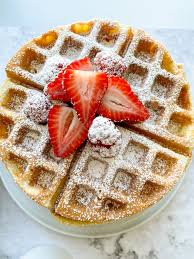

Waffles

Ingredients
Servings: 8
- 1 cup milk
- 1 egg
- 1/4 cup melted butter (23g)
- 1 1/2 tablespoons vanilla extract
- 3/4 cup all-purpose flour, sifted
- 1/2 tablespoon baking powder
- 1/4 cup sugar
- Cooking spray
Preparation
- 1. To make the waffles, mix the milk, egg, butter, vanilla extract, sugar, flour, and baking powder.
- 2. Preheat your waffle maker, spray with cooking spray, and with the help of a ladle, pour some of the
mixture onto the maker. Cook for 3 to 4 minutes or until lightly golden brown. Repeat with the remaining
mixture.
- 3. Serve with condensed milk or maple syrup.
Home